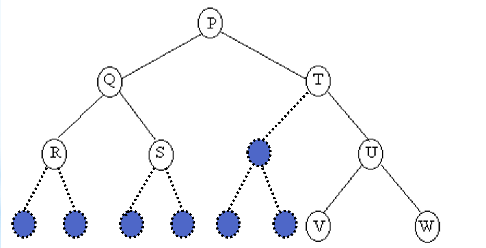

Dalam ilmu komputer, pohon biner digunakan untuk memodelkan struktur data yang memiliki hierarki atau urutan. Pohon biner terdiri dari simpul-simpul yang saling terhubung dengan garis-garis yang disebut sebagai cabang. Setiap simpul pada pohon biner memiliki paling banyak dua anak, yaitu anak kiri dan anak kanan.Pohon (Tree) termasuk struktur non linear yang didefinisikan sebagai data yang terorganisir dari suatu item informasi cabang yang saling terkait.
Predesesor
Node yang berada diatas node tertentu.
(contoh : B predesesor dari E dan F)
Succesor
Node yang berada dibawah node tertentu.
(contoh : E dan F merupakan succesor dari B)
Ancestor
Seluruh node yang terletak sebelum node tertentu dan terletak pada jalur yang sama.
(contoh : A dan B merupakan ancestor dari F)
Descendant
Seluruh node yang terletak sesudah node tertentu dan terletak pada jalur yang sama.
(contoh : F dan B merupakan ancestor dari A)
Parent
Predesesor satu level diatas satu node
(contoh : B merupakan parent dari F)
Child
Succesor satu level dibawah satu node
(contoh : F merupakan child dari B)
Sibling
Node yang memiliki parent yang sama dengan satu node
(contoh : E dan F adalah sibling)
Subtree
Bagian dari tree yang berupa suatu node beserta descendant-nya
(contoh : Subtree B, E, F dan Subtree D, G, H)
Size
Banyaknya node dalam suatu tree
(contoh : gambar tree diatas memiliki size = 8)
Height
Banyaknya tingkat/level dalam suatu tree
(contoh : gambar tree diatas memiliki height = 3)
Root (Akar)
Node khusus dalam tree yang tidak memiliki predesesor
(Contoh : A)
Leaf (Daun)
Node-node dalam tree yang tidak memiliki daun
(contoh : Node E,F,C,G,H)
Degree (Derajat)
Banyaknya child yang dimiliki oleh suatu node
(contoh : Node A memiliki derajat 3, node B memiliki derajat 2)
Pohon atau Tree adalah salah satu bentuk Graph terhubung yang tidak mengandung sirkuit. Karena merupakan Graph terhubung, maka pada Pohon (Tree) selalu terdapat Path atau Jalur yang menghubungkan setiap simpul dalam dua pohon .Pohon (Tree) dapat juga didefinisikan sebagai kumpulan elemen yang salah satu elemennya disebut dengan Akar (Root) dan sisa elemen lain (Simpul) yang terpecah menjadi sejumlah himpunan yang saling tidak berhubungan yang disebut dengan Subpohon (Subtree) atau cabang
Jika Pohon mempunyai Simpul sebanyak n, maka banyaknya ruas atau edge adalah (n-1).
Mempunyai Simpul Khusus yang disebut Root, jika Simpul tersebut memiliki derajat keluar >= 0, dan derajat masuk = 0.
Mempunyai Simpul yang disebut sebagai Daun / Leaf, jika Simpul tersebut berderajat keluar = 0, dan berderajat masuk = 1.
Setiap Simpul mempunyai Tingkatan / Level yang dimulai dari Root yang Levelnya = 1 sampai dengan Level ke - n pada daun paling bawah. Simpul yang mempunyai Level sama disebut Bersaudara atau Brother atau Stribling. .
Pohon mempunyai Ketinggian atau Kedalaman atau Height, yang merupakan Level tertinggi
Pohon mempunyai Weight atau Berat atau Bobot, yang banyaknya daun (leaf) pada Pohon.
Banyaknya Simpul Maksimum sampai Level N adalah :
Banyaknya Simpul untuk setiap Level I adalah :
Hutan (Forest) adalah kumpulan Pohon yang tidak saling berhubungan
Diketahui suatu bentuk Pohon Berakar T sebagai berikut :
Pohon Diatas Mempunyai :
Simpul sebanyak = 8 dan edge = n - 1 = 8 – 1 = 7
Root pada Pohon T diatas adalah Simpul P
Mempunyai daun (Leaf) = 4, yaitu = R, S, V dan W
Level (tingkatan) Pohon = 4 yaitu :
Level 1 = Simpul P
Level 2 = Simpul Q dan T
Level 3 = Simpul R, S dan U
Level 4 = Simpul V dan W
Ketinggian atau kedalaman = jumlah level = 4
Weight atau berat atau bobot = jumlah daun = 4
Dalam gambar Pohon T diatas dapat dibentuk 2 buah hutan (forest), bila simpul P dihilangkan, yaitu :
Hutan 1 : Q,R,S
Hutan 2 : T,U,V,W
Banyaknya Simpul Maksimum yang dapat terbentuk sampai Level 4 (bila simpul pada pohon dianggap penuh) adalah :

Banyaknya Simpul maksimum untuk setiap Level I (bila simpul pada pohon dianggap penuh) adalah : Maksimum Simpul pada level 2 = 2 ( I – 1) = 2 (2-1) = 2 Maksimum Simpul pada level 3 = 2 (3-1) = 4 Maksimum Simpul pada level 4 = 2 (4-1) = 8
Struktur ini biasanya digunakan untuk menyajikan data yang mengandung hubungan hirarkial antara elemen-elemennya. Bentuk Pohon Berakar yang lebih mudah dikelola dalam komputer adalah Pohon Biner (Binary Tree) yang lebih dikenal sebagai Pohon Umum (General Tree) yang dapat didefinisikan sebagai kumpulan simpul yang mungkin kosong atau mempunyai akar dan dua Subpohon yang saling terpisah yang disebut dengan Subpohon Kiri / cabang kiri (Left Subtree) dan Subpohon Kanan / cabang kanan (Right Subtree).